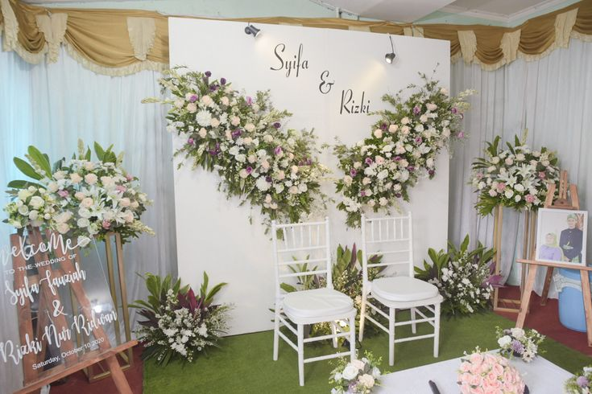
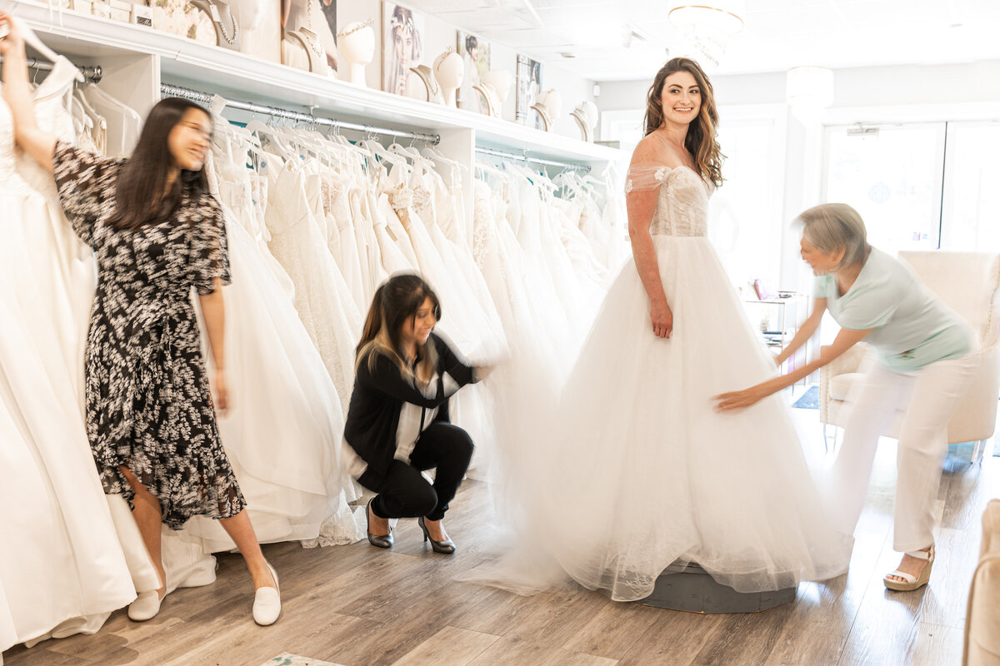
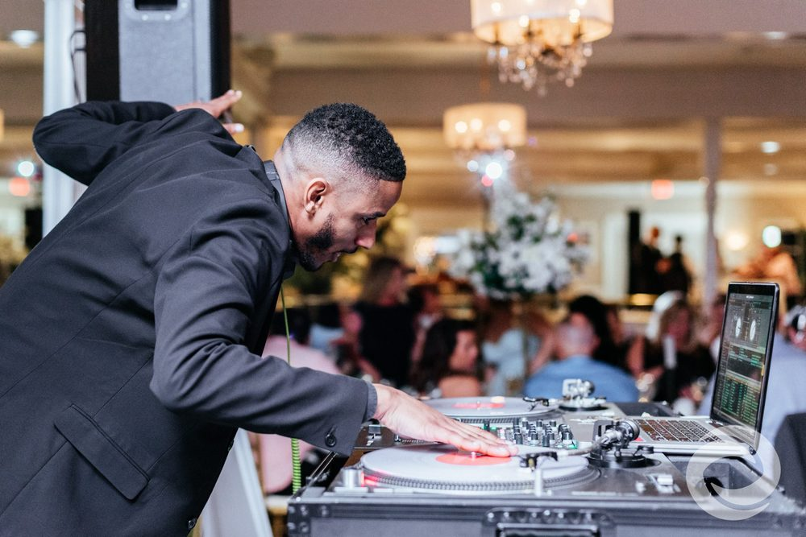

Мястото и ресторантът изиграват изключително важна роля в създаването на перфектна сватба. Изборът на подходяща локация допринася за уникалната атмосфера и емоция на събитието. Красивата природа, изисканите интериори или историческата стойност на мястото могат да направят момента още по-специален. Ресторантът, от своя страна, е ключов елемент за успешната сватба, предлагайки не само вкусна храна, но и пространство, което отразява стила и предпочитанията на брачния двойки. Професионалното обслужване и вниманието към детайлите от страна на ресторантьорите допринасят за комфорта и удовлетворението на гостите. Изборът на перфектно място и ресторант не само създава едно незабравимо преживяване за влюбения двойки, но и оставя трайно впечатление на всички присъстващи. Така, възможността за създаване на вълнуващи спомени, преплетени с уникални елементи от околната среда и вкусове, прави избора на място и ресторант от основна важност за успешното провеждане на сватбата.

На всяка сватба, храната играе ключова роля в създаването на незабравимо преживяване. С внимателно подбраното меню можете да осигурите удоволствие и наситеност за вашите гости. Изборът на качествена храна е от съществено значение, като това става пътят към техните сърца. Нека вкусът на вашата сватбена храна бъде пътеводител в едно чудесно приключение.

Украсата, цветята, поканите и картичките създават атмосфера на елегантност и хармония. Внимателно подбраните елементи на декора допринасят за уникалността и стиловете на сватбения ден.

Булченската рокля и дрехите изобщо са израз на индивидуалността и стила на булката и жениха. Визията на младоженците в деня на сватбата излъчава не само техния индивидуален стил, но и събужда емоции и оставя неповторим впечателен след. Тя представлява символ на тяхната любов и единство, като подчертава важността на този специален момент в техния живот. Претъпкана с символика, сватбената визия отразява стиловите предпочитания на двойката и добавя индивидуалност към церемонията, която ще бъде запомнена и споделяна през годините. Отличителният външен вид добавя личност и естетика към събитието, правейки го по-запомнящо се.

Озвучението, водещият, програмата и игрите въздействат директно върху настроението на сватбата. Добрата музика, добре планираната програма и вълнуващите изпълнения създават емоционално заредено преживяване за всички присъстващи.